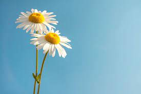
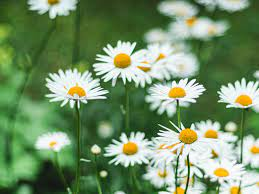
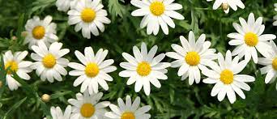
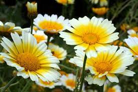

Home Description Images Video




Description
It is a perennial herbaceous plant with short creeping rhizomesand rosettes of small rounded or spoon shaped leaves that are from 3/4 to 2 inches long and grow flat to the ground.
The species habitually colonises lawns,and is difficult to eradicate by mowing-hence the term 'lawn daisy'.
It exhibits the phenomenon of heliotropism where the flowers follow the position of the sun in the sky.